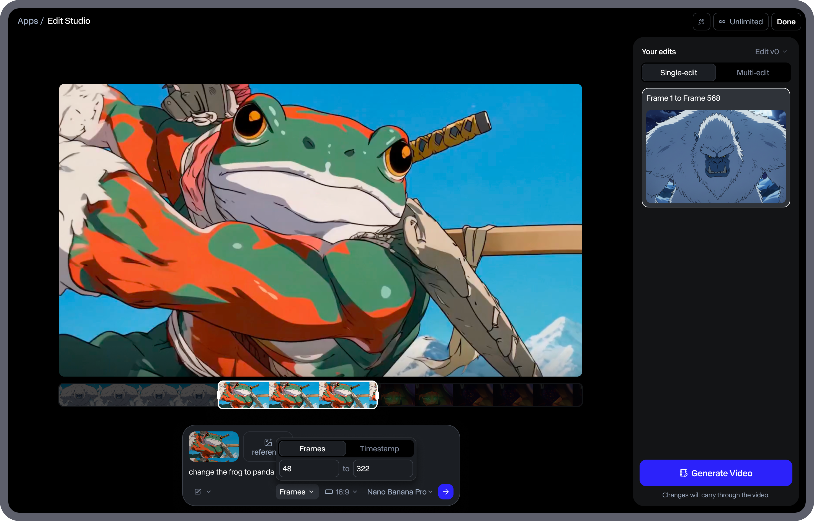
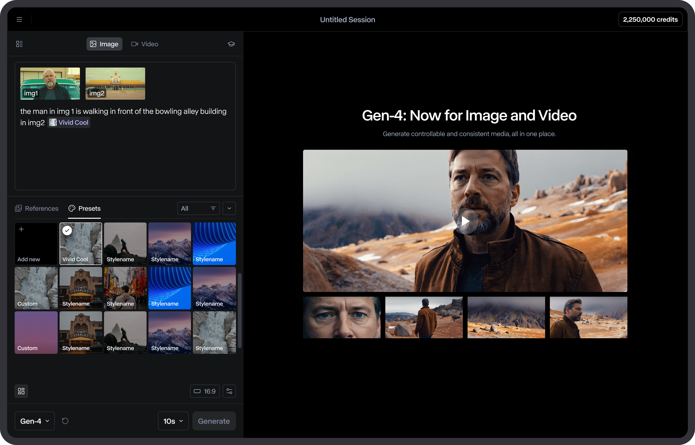
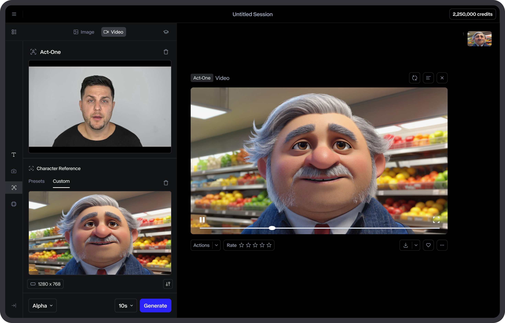
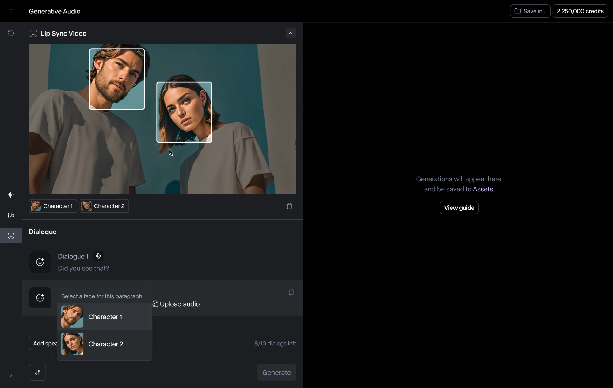
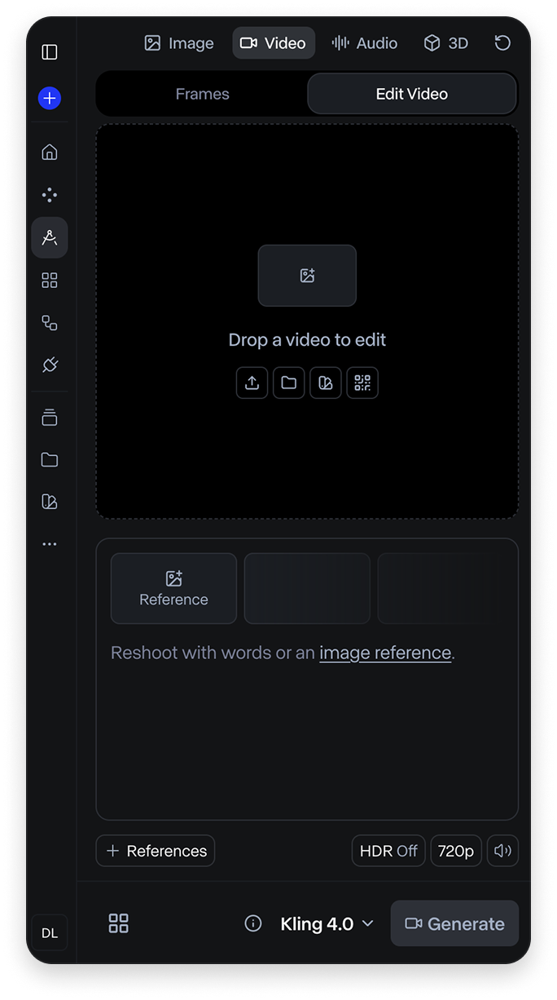
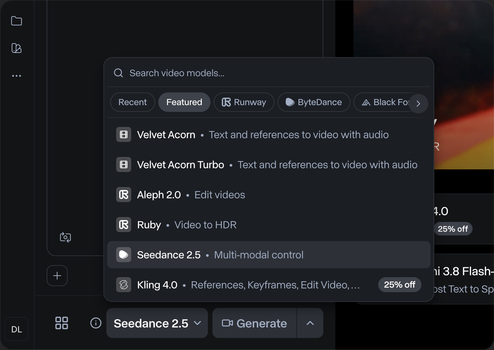

Model productization
Scaling how Runway ships models
Runway ships models fast, including third-party models on day one. But each launch started from scratch, so empty states, layouts and error handling differed from tool to tool.
Alongside designing those launches, I designed the modular layout every tool now shares and the model picker built for an ever-growing list of vendors. They’re part of a system that also includes a productization checklist in Notion, which gives every model a repeatable path to launch, and clearer error states. Our third-party model team built the backend and API that make day-one launches possible.
Every next launch is now easier and faster.
Launch highlights
First-of-their-kind launches
Edit Studio (2026) (opens Edit Studio on Runway in a new tab)
Designed the flow to select a representative frame or range and edit your entire video from it.
Act-Two & One (2024–2025) (opens Act-Two & One on Runway in a new tab)
Designed onboarding with example assets, and recording right on the web.
Gen-4 & Turbo (2025) (opens Gen-4 & Turbo on Runway in a new tab)
Designed the image and video references and tagging experience.
Lip Sync (2024)
Designed voice verification and the multi-dialogue layout.
Gen-3 Alpha (2024) (opens Gen-3 Alpha on Runway in a new tab)
Designed a guided creation experience with style and motion presets.
Gen-2 (opens Gen-2 on Runway Research in a new tab) & Gen-1 (opens Gen-1 on Runway Research in a new tab) (2023)
Designed a guided creation experience with style presets, prompt examples and Motion Brush.




What I contributed
A system that makes every next launch easier and faster
Each model used to get its own custom layout, built around what it did best. But as our suite of models grew and we began bringing third-party models onto the platform, we needed a simpler, modular layout that could fit every model we launch next.
Productization checklist
A Notion checklist that gives every model a repeatable path to launch across our web app.
Transparent error states
Clearer feedback when a generation fails, so users know what to try next.
Scalable model picker
Built for an ever-growing suite of third-party models.
Modular layout
One layout, every model



Model picker
Browse every model by vendor and modality

Unified feed
New features up top, popular models below